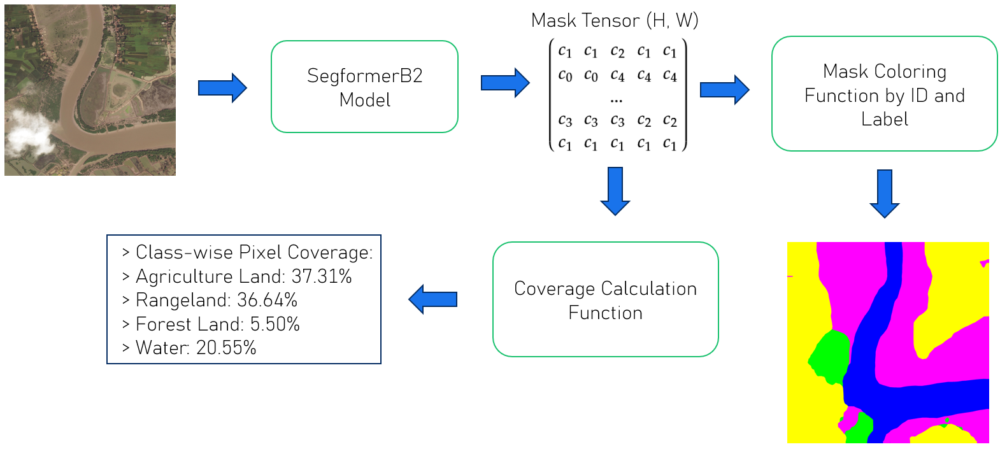
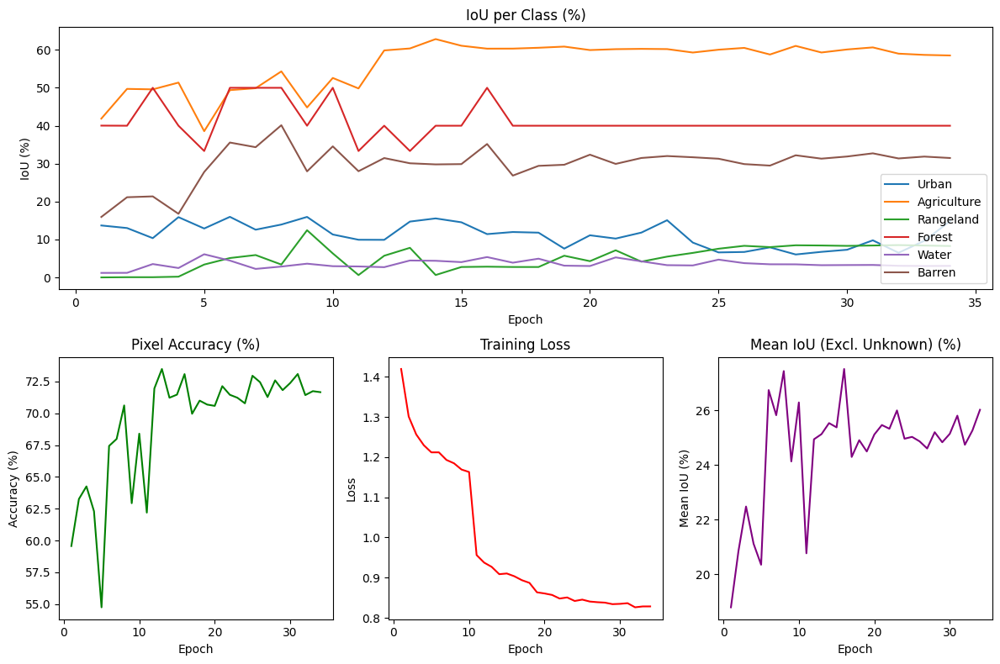

Overview
Measuring the size of land areas like cities, forests, and ice formations is challenging, especially when you need accurate data over time. Our project aims to use AI and satellite imagery to automate that process. By leveraging image recognition technology, our system can detect and classify different land types, like urban areas, forests, farmland, and ice, directly from satellite images.
AI for Satellite Image Classification (ASIC) is a software project that uses deep learning to do pixel-level classification of satellite images. The main goal is to figure out what percentage of an image is covered by each land type by segmenting it and calculating the area of each class. This could be useful for a wide range of people, like city planners tracking urban growth or environmental researchers monitoring deforestation and melting ice.
Motivation
Land use maps are essential for informed decision making in fields like urban planning, agriculture, and environmental science. City planners rely on up-to-date area measurements to manage infrastructure, zoning, and services. Agricultural managers need to monitor crop rotations and estimate yields. Environmental researchers track deforestation, wetlands loss, and ice melting. These people could find a fine-tuned model for their images useful.
Traditional mapping is often done yearly, which is not fast enough. Planners need quicker updates to protect areas. Our solution is AI-powered pixel segmentation. It works on satellite images to create 7-class land masks, automating the task. Urban expansion in particular is a big reason why this kind of tool is needed. According to the United Nations, more than half of the world's population lived in cities by 2010, and that number is expected to reach 60% by 2025. As urban populations grow and densities drop, urban land area is projected to more than triple. By providing clear and accurate land type breakdowns from satellite images, ASIC can help monitor and potentially manage these changes more responsibly.
Approach
To get started, we looked at a few image segmentation models to figure out which one would work best for our use case. The models we tested included SAM2, DeepLabV3+ with a ResNet50 encoder, and SegFormerB2.
Our initial plan was to find the best-performing model, fine-tune it with a dataset we found online, and then use it to output land type percentages and calculate the areas in square meters.
We landed on the SegFormerB2, because of it's pixel classification capabilities and overall precision. We tried to combine SAM2 and DeepLabV3+ with a ResNet50 encoder, where we first segmented an image and then labeled the segmented areas, but the SegFormerB2 overall performed better. Next step was to fine-tune it using our satellite image dataset. We adapted the training process to better fit the kind of images we were dealing with and the specific land-type labels we wanted the model to learn.
After training, we used the model to segment new satellite images. From the segmentation maps, we calculated what percentage of the image each land type covered and from that, estimated the actual area in square meters. This gave us exactly the kind of useful output we were aiming for.

Dataset
For training and evaluation, we used the DeepGlobe 2018 dataset. It's a dataset with 803 samples, each made up of a satellite image, a ground truth segmentation map, and a mask.
The dataset covers 7 land-type classes, each one represented by a different color in the mask:
- [0] Urban Land - Cyan (0, 255, 255)
- [1] Agriculture Land - Yellow (255, 255, 0)
- [2] Rangeland - Magenta (255, 0, 255)
- [3] Forest Land - Green (0, 255, 0)
- [4] Water - Blue (0, 0, 255)
- [5] Barren Land - White (255, 255, 255)
- [6] Unknown - Black (0, 0, 0)
These color-coded masks made it easier to visualize what the model was learning and to evaluate how well it was doing during training. To add some visual verification other than the pixel accuracy, IOU-values and other evaluation metrics.
Experimental Results
We evaluated the model using both visual outputs and metrics like pixel accuracy, IoU, mean IoU, and class coverage. Overall, the model did okay, but the results were not amazing. We had a bit of an imbalanced dataset too. With some land types like agriculture and rangeland showed up in most of the images, so the model learned those better. Other classes like water, forest, and urban areas were harder for it to get right, since they appeared less often.
Evaluation Metrics
The performance of our segmentation model was evaluated using several key metrics, each providing unique insights into different aspects of the model's capabilities:
Intersection over Union (IoU)
IoU, also known as the Jaccard Index, is calculated as:
IoU = (True Positive) / (True Positive + False Positive + False Negative)
This metric measures the overlap between the predicted segmentation mask and the ground truth mask. A perfect segmentation would yield an IoU of 1.0, while complete mismatch results in 0.0. IoU is particularly valuable because it penalizes both false positives and false negatives equally, making it robust for evaluating segmentation quality across different class distributions.
Pixel Accuracy
Pixel accuracy is computed as:
Pixel Accuracy = (True Positive + True Negative) / Total Pixels
While this metric provides a straightforward measure of classification accuracy, it can be misleading in imbalanced datasets where one class dominates the image. We therefore use it in conjunction with IoU for a more comprehensive evaluation.

Conclusion
ASIC shows that modern image segmentation models can be adapted to work pretty well with satellite images. Our software can break down an image into land types and give useful stats like percentage coverage and area in square meters. That alone could be helpful for people working with things like urban planning or environmental monitoring.
That said, there is still a lot of room to improve. One big challenge is that satellite images often have blurry or overlapping land types, and there are not always clear boundaries between classes. This makes it harder for the model to be super accurate, especially when some classes appear way more than others in the dataset.
Our current model works well in the web app and gives decent results. But if this were to be used professionally, we would need to boost the IoU and pixel accuracy for all classes.